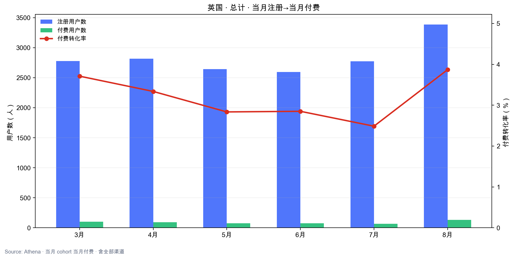
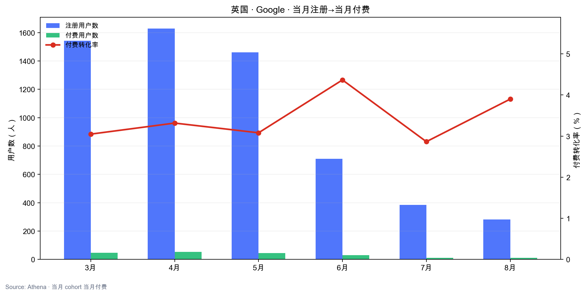
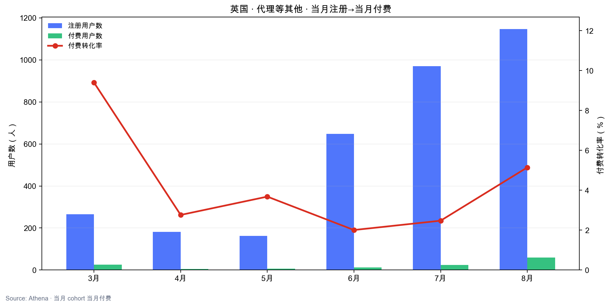
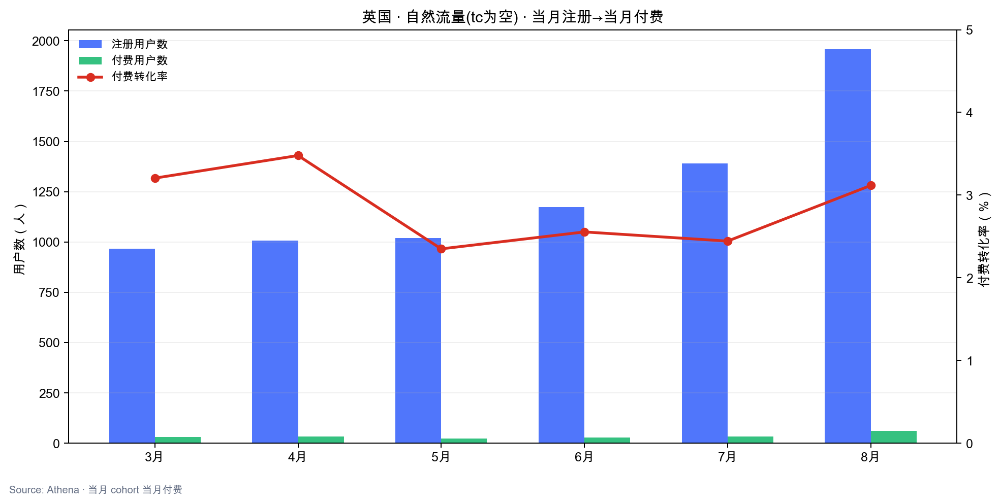

结论：Google 注册 3月 1,542 → 8月 282（-82%），但月总付费仍稳定在 $53k–$63k；老用户占付费 82%+。停投砍的是获客，不是短期收入。
1. 月付费金额拆分
| 月份 | 总付费 | 新注册付费 | 老用户付费 | 新注册占比 |
|---|---|---|---|---|
| 3月 | $63,056 | $10,488 | $52,568 | 16.6% |
| 4月 | $54,349 | $7,455 | $46,894 | 13.7% |
| 5月 | $53,102 | $5,343 | $47,759 | 10.1% |
| 6月 | $57,228 | $7,320 | $49,908 | 12.8% |
| 7月 | $57,302 | $5,496 | $51,807 | 9.6% |
| 8月 | $61,954 | $9,399 | $52,555 | 15.2% |

2. 注册分渠道趋势
| 月份 | 总注册 | TK+FB | 代理 | 自然 | |
|---|---|---|---|---|---|
| 3月 | 2,776 | 1,542 | 1 | 266 | 967 |
| 4月 | 2,817 | 1,628 | 2 | 181 | 1,006 |
| 5月 | 2,645 | 1,461 | 0 | 163 | 1,021 |
| 6月 | 2,596 | 710 | 64 | 648 | 1,174 |
| 7月 | 2,775 | 384 | 30 | 970 | 1,391 |
| 8月 | 3,386 | 282 | 0 | 1,147 | 1,957 |


3. 分注册渠道 · 当月付费表现
当月注册且在当月付费；付费转化率 = 付费用户数 / 注册数。
3.1 总计（全部注册渠道）
| 月份 | 注册数 | 付费用户数 | 付费转化率 |
|---|---|---|---|
| 3月 | 2,776 | 103 | 3.71% |
| 4月 | 2,817 | 94 | 3.34% |
| 5月 | 2,645 | 75 | 2.84% |
| 6月 | 2,596 | 74 | 2.85% |
| 7月 | 2,775 | 69 | 2.49% |
| 8月 | 3,386 | 131 | 3.87% |

3.2 Google
| 月份 | 注册数 | 付费用户数 | 付费转化率 |
|---|---|---|---|
| 3月 | 1,542 | 47 | 3.05% |
| 4月 | 1,628 | 54 | 3.32% |
| 5月 | 1,461 | 45 | 3.08% |
| 6月 | 710 | 31 | 4.37% |
| 7月 | 384 | 11 | 2.86% |
| 8月 | 282 | 11 | 3.90% |

3.3 代理等其他
| 月份 | 注册数 | 付费用户数 | 付费转化率 |
|---|---|---|---|
| 3月 | 266 | 25 | 9.40% |
| 4月 | 181 | 5 | 2.76% |
| 5月 | 163 | 6 | 3.68% |
| 6月 | 648 | 13 | 2.01% |
| 7月 | 970 | 24 | 2.47% |
| 8月 | 1,147 | 59 | 5.14% |

3.4 自然流量（tc 为空）
| 月份 | 注册数 | 付费用户数 | 付费转化率 |
|---|---|---|---|
| 3月 | 967 | 31 | 3.21% |
| 4月 | 1,006 | 35 | 3.48% |
| 5月 | 1,021 | 24 | 2.35% |
| 6月 | 1,174 | 30 | 2.56% |
| 7月 | 1,391 | 34 | 2.44% |
| 8月 | 1,957 | 61 | 3.12% |

4. 新注册付费金额趋势